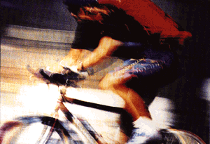

|
Sykler i alle prisklasser får du hos Sportshuset. | |||
|
 | DBS Kilimanjaro 21 OFFROAD 21 GIR Shimano, skjermer, bagasje, støtte, lys, lås og forsikring. Dame/Herre Veil. 3999,- | 2999,- | |
|
Air Sport OFFROAD 21 GIR Skjermer, bagasje, støtte, lys | 3499,- | ||
|
Track Pacific OFFROAD 21 GIR Skjermer, bagasje og støtte | 2499,- | ||
|
Air Pro Team MOUNTAINBIKE 24 GIR Komplett Shimano Deore LX utstyr. Grip Shift SRT 6000, Mavic M-238-S felger, Tioga psycho II dekk. veil. 5999,- | 4999,- |
Intruder Birkebeiner MOUNTAINBIKE 24 GIR Shimano, Deore LS utstyr, Aluminium 7005 ramme Mavic 221 felger, Tioga Psycho dekk, Vetta Magnesium, sete og forsikring. veil. 8499,- | 7499,- |
|
ASKER/BÆRUM Nesbru v/IKEA Tlf.: 66 98 00 11 |
OSLO SENTRUM Fronervn.9/Ullevålsvn.11 Tlf.:22 55 29 57 / 22 20 11 21 |
STORO Storo Shopping Tlf.:22 15 13 10 |
|
RYEN Enebakkvn. 154 Tlf.: 22 67 10 55 |
LØRENSKOG Solheimvn.30, Skårer Tlf.:67 97 26 70 |
SKI Ski Storsenter Tfl.: 64 85 92 90 |